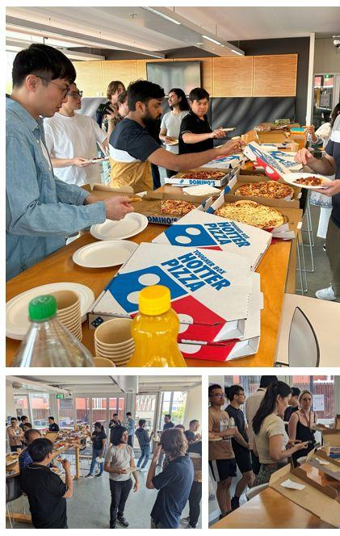
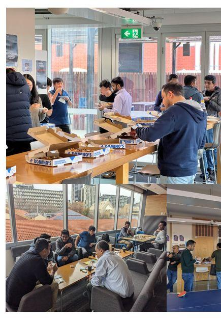

Building Resilient Systems in an Increasingly Fragile World
In modern computing, failure is not a possibility — it is an inevitability waiting for the right trigger. Every connected system, every AI model, every piece of enterprise software carries within it some latent vulnerability that an adversary, a race condition, or an unexpected load spike will eventually expose. My work is about narrowing that window, building software that survives, adapts, and continues its mission when the inevitable happens.
I serve as a Lecturer and Researcher at the School of Computer Science and Information Technology, Adelaide University. My research sits at the intersection of Cyber Security, Software Engineering, and Generative AI — where I develop the methodologies, architectures, and empirical evidence that help organizations move from reactive patching to proactive, self-healing digital infrastructure.
Before I wrote a line of security research, I was managing a team of over 20 technicians on high-speed industrial laminator lines at Tetra Pak in Pakistan. The machines ran 24 hours a day. A lapse in monitoring didn't trigger a warning message in a dashboard — it triggered a mechanical shutdown and a cascade of disrupted production. Later, supervising quality operations at Prolife Foods in Adelaide reinforced the same lesson: you cannot protect what you don't continuously observe.
That experience gave me something postgraduate study couldn't easily replicate: the visceral understanding that operational systems live or die by the quality of their telemetry, the discipline of their operators, and the robustness of their fail-safe architectures.

When I joined the University of Adelaide's cyber research group in 2020, I entered a project that demanded precisely this operational mindset. Funded by the Cyber Security Cooperative Research Centre (CSCRC), Australia's Defence Science and Technology Group (DSTG), and Cisco, our team was tasked with stress-testing military Command-and-Control (C2) networks — identifying vulnerabilities before adversaries could, and designing autonomous, real-time mitigation protocols.
We built attack simulators, mapped vulnerability cascades through interconnected network nodes, and developed self-adaptive isolation mechanisms that didn't require a human decision to activate. Adversaries don't knock on the front door. The most effective incursions slide through lateral movement paths that look, briefly, like normal traffic.
A recurring theme in my career is the question of who, ultimately, benefits from the systems we build. At Kindship, an NDIS service provider, I deployed a machine-learning recommendation engine designed to solve an intensely human problem: matching differently abled children and their families with exactly the right therapist. Not the nearest one, not the most available one, but the right one — based on a precise model of therapeutic needs and practitioner expertise.
At Migrova, backed by Stone & Chalk and Antler, I served as Chief Project Officer, securing a A$100,000 Seed-Start grant from the South Australian Department of State Development to build AI-powered matching infrastructure for international migrants. Both ventures validated something I believe deeply: the most technically interesting problems often emerge from the most human circumstances.
Today, I manage the A$250,000 Adaptive Dynamic Application Orchestrator project, funded by Defence Trailblazer in partnership with DEWC Services. The goal: an AI-driven platform that constructs, validates, and deploys mission-critical tactical applications in contested environments where communication may be intermittent, infrastructure degraded, and adversarial interference constant.
In parallel, as a Lecturer at Adelaide University, I teach Cybersecurity, AI, and Software Engineering — bringing these experiences directly into the classroom. I don't think of teaching as transmission of content. I think of it as preparing the people who will design the next generation of critical systems, and giving them the instinct — not just the knowledge — to do it right.

